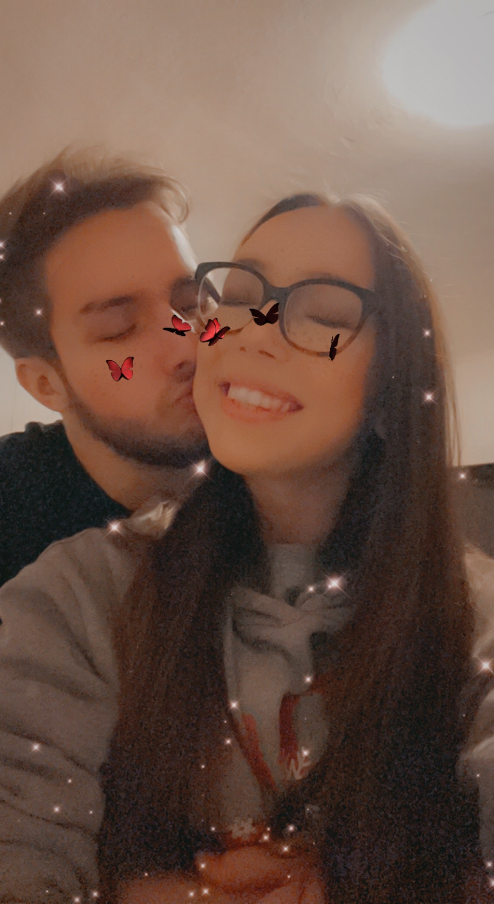

THE JOURNEY OF KARIN: A Story of Life's Adventures and Lessons learned
Welcome to the website that chronicles the incredible journey of Karin, a brave and resilient individual who has traversed through life's highs and lows with unwavering courage and determination. Join me as I delve into my life story, from my humble beginnings to my triumphs and challenges along the way.
About Karin
I'm Karin Logar and I'm 21 years old. My birthday is on 19th April. I am from Slovenia, from the village Vrbovo near Ilirska Bistrica. I am very smiley, always positive and self-initiative. I am studying at the Faculty of Business and Technology in Vipava, majoring in economic engineering. I graduated from the Secondary School of Arranging in Sežana, I was a gold graduate. I love animals, so I have a dog and a pet rabbit at home. I am very active in sports. I go to the gym and walk with my dog every day. I also like to go hiking and cycling. I have four tattoos, each with its own meaning. I plan to make a few more in the future. My favorite color is pink, but I also wear black a lot. I listen to all kinds of music, but I prefer Balkan and metal.
My zodiac sign is Aries, which is also reflected in my personality. I'm very stubborn and headstrong, I get offended quickly if it's not the way I want it to be. But I am also very kind-hearted, kind, I like to help and I love people who are close to me with all my heart.
When I was little, I was very cunning and caused my parents a lot of trouble. I went to music school for 13 years, first I played the violin for 8 years and then I took solo singing lessons for 5 years. Now I don't have time for all that anymore, because I have a lot to learn and other everyday commitments. When I was younger I used to love skating and skiing, but now I just like to go walk in the snow and play with my dog. I didn't like primary school because it was compulsory. When I was 12, my father taught me how to ride a motorbike and I loved riding it. My father and I were very close, but sadly he left me when I was 17 because he had cancer. I passed my car test when I was 19 and now I'm the main driver in the house.
This is me when I was little.
Adventures
My life in general is quite varied, I travel a lot. I've been to Bratislava in Slovakia, I've been to a few places in Austria, Croatia, of course, because I live only 10 minutes from the Croatian border. This April I visited Sicily and Venice in Italy. I also travel a lot around Slovenia. I like Gorenjska the best because it has a lot of beautiful places and viewpoints. I also like Prekmurje, because it is very special because of the way they speak and the food. Last summer I also visited Velika Planina, which is beautiful. I have a lot of friends who love to travel and are eager for new challenges, so I never go anywhere alone. My 3-year-old Border Collie dog Ajša often keeps me company on the road. I also follow a lot of sports, basketball being my favourite. Last year, I went to a few basketball games when the Slovenian national team played in Koper and Stožice. Being a fan of metal music, I also went to a Judas Priest concert in Ljubljana with my uncle.
Clicking on each image will open a link to the websites where you will find out more information. These are also my resources.
My dog Ajša.Balestrate, SicilyBasketball match SLO:CROConcert by Judas PriestVelika Planina, SloveniaBelope lakes, Italy
Challenges
I also had many challenges in my life that I had to deal with. The first major challenge was choosing a high school. My parents left me free to choose and were always of the opinion that everyone should choose what suits them. When I was 7 years old I proudly said that I would definitely become a veterinarian. But because I feel sorry for animals and I always cry when one dies, I realized that this profession is definitely not for me. Because I liked to create and draw a lot, I then decided to major in arrangement technique and enrolled in the high School in Sežana. I successfully finished all my 4 years in high school and with a very successful graduation I was awarded the title of "golden graduate". Over the years of schooling, it turned out that I made the right decision. The next big and important decision for further life was certainly the choice of study. In high school, I realized that I was also interested in entrepreneurship. Since I never wanted to be in a student dormitory, this time I also decided to find a place of study that is fairly close so that I can drive by car. I enrolled in two options, namely Economic Engineering in Vipava and management studies in Koper. I was accepted on my first request, which was Economic Engineering. I successfully completed the 1st year, now I am completing the 2nd year and I want to successfully complete the 3rd year and enroll in the master's degree. Then I surrender to the flow of life, what it has in store for me in the future.
This is me at my high school graduation.
Lessons Learned
I have learned many things in my life. I grew up very quickly, because I had to, because I have been living only with my mother for 4 years. I realized that the way of life depends on me, what decisions I will make and how I will implement them. A year and a half ago I met a guy named Patrik with whom we have been together for a good year now. He also helped me a lot with everything and always supported me and advised me in my decisions. I am also very grateful to my father for raising me into such a strong and independent woman, and to my mother, who has guided me through life for 21 years. My parents taught me that nothing in life is done by yourself and sometimes you have to literally fight to reach your goal.
Me and my mom Suzana.

Me and my boyfriend Patrik.

{kind=link}
{kind=link}
{kind=link}
{kind=link}